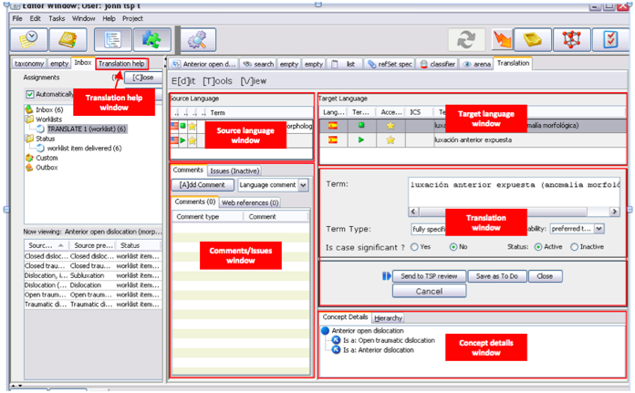
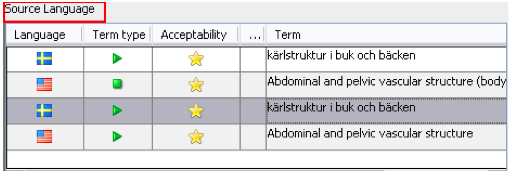
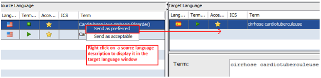
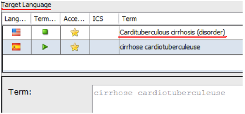
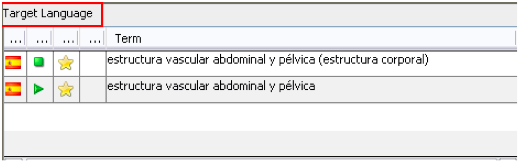
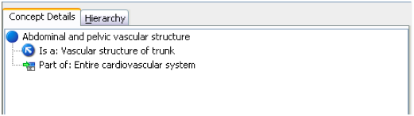
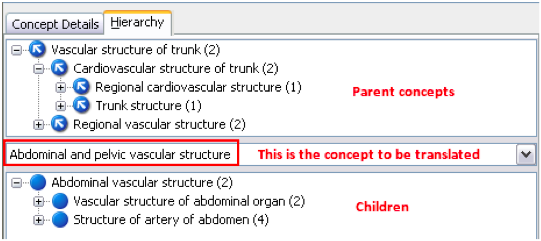
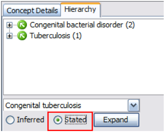
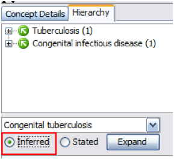

Double clicking on one assignment will display it on the right panel, where the following
windows are shown:

Source language window
This window shows the concept in the source language(s) with the descriptions defined in the
configuration options, i.e, fully specified name, preferred term, and acceptable descriptions
(synonyms). Retired descriptions may also be shown. The width of each column may be changed by
scrolling the lateral border to right or left:

- Any descriptions in the Source language window, i.e., fully specified name, preferred
term or synonyms, can be automatically transferred to the target language window by right
clicking the selected description:

- You can choose to send your description with acceptability preferred or acceptable. In
the example shown, the FSN of the source language has been submitted as preferred FSN to
the target language. This function is independent from the specified project configuration
options.

Target language window
Whenever a published translation already exists in the target language, it is displayed in
this window. The translator will be able to see whether a change is needed (correction,
addition of synonyms, etc.). Scrolling their lateral borders to right or left may also change
the width of each column.

The items displayed in the source and target languages are defined in the “Translation
Configuration” dialog.
Concept details window
This window is divided in two parts.
- Concept details tab shows concept features, as its status, whether it is
primitive or fully defined, position in hierarchy (IS_A relationship) and attributes
(method, procedure site, etc.) (See User Guide for a detailed explanation). This window
helps to give some context, preventing translation errors due to term-to-term
translation
.

- Hierarchy tab shows a concept walker where the concept to be translated is shown
as the focus concept, as well as its parents in the upper part and its children, below.
All of them may be displayed with further detail by clicking the ‘+’ symbol. The numbers
in brackets indicate how many children/parents each concept has. The focus concept can be
changed by dropping a parent or a child concept, effectively navigating the
hierarchy.

- The concept walker also has two buttons to select the Inferred or the Stated views. This
will determine the number of parent and children displayed, as the stated view shows the
concepts as the modeler has modeled them, while the inferred view displays them after
running the automated classification. In both views, concept relationships will be
different and this will determine the concepts displayed.

Translation window and Translation help windows will be described separately.